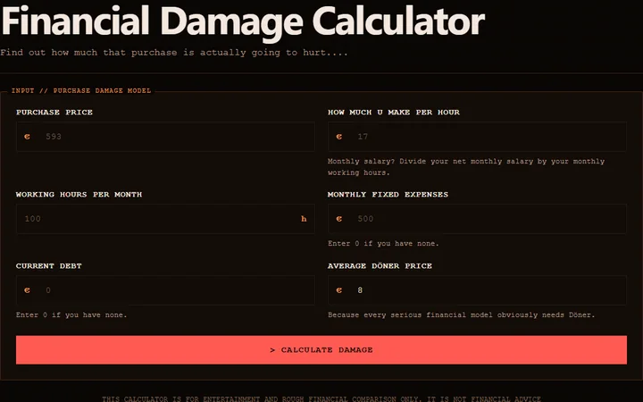
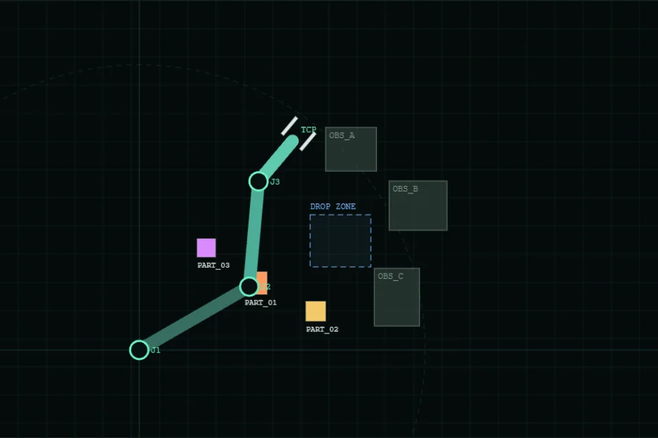
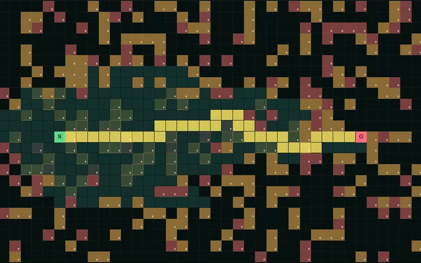
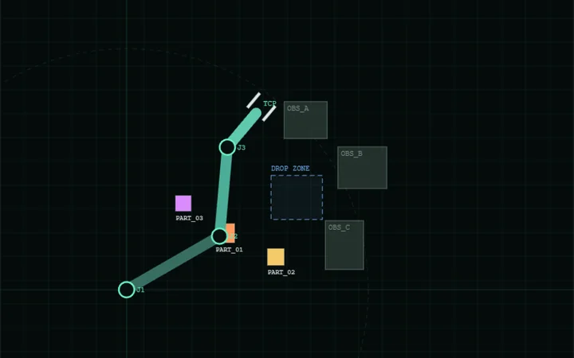
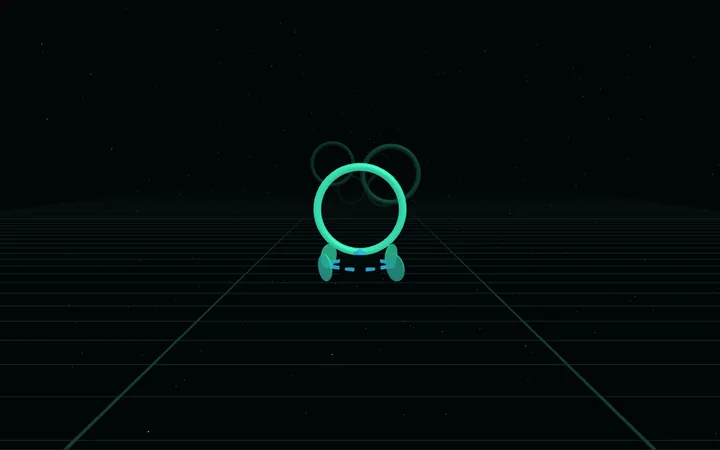

Financial Damage Calculator
Find out exactly how many work hours and Döner your next terrible purchase is going to cost.
calculate damage// WELCOME TO W.ZC
Mechatronics Bs. of Science • Projects, random ideas & more.
Personal lab notebook for useful tools, useless experiments and software that survived long enough to get a public URL.


Find out exactly how many work hours and Döner your next terrible purchase is going to cost.
calculate damage
Watch A*, Dijkstra and Greedy Best-First fight through obstacles, weighted terrain and optional diagonal movement.
run experiment
Interactive 2-DOF / 3-DOF planar robot with FK, analytic IK, collision guards, gripper automation and taught pose sequences.
move robot
Third-person 3D drone flight with Training, Time Attack and procedural Endless modes, responsive steering and soft ambient audio.
start flight test